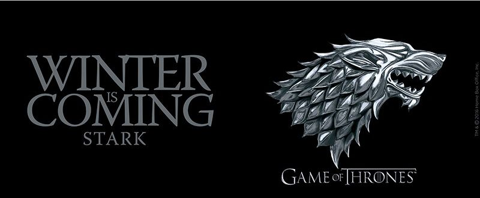

| 1 |
"Winter is coming" |
Van Patten |
David Benioff & D. B. Weiss |
April 17, 2011 |
2.22[21] |
| 2 |
"The Kingsroad" |
Tim Van Patten |
David Benioff & D. B. Weiss |
April 24, 2011 |
2.20[22] |
| 3 |
"Lord Snow" |
Brian Kirk |
David Benioff & D. B. Weiss |
May 1, 2011 |
2.44[23] |
| 4 |
"Cripples, Bastards, and Broken Things" |
Brian Kirk |
Bryan Cogman |
May 8, 2011 |
2.45[24] |
| 5 |
"The Wolf and the Lion" |
Brian Kirk |
Story by : David Benioff & D. B. Weiss
Teleplay by : Jane Espenson and David Benioff & D. B. Weiss |
May 15, 2011 |
2.58[25] |
| 6 |
"A Golden Crown" |
Daniel Minahan |
Story by : David Benioff & D. B. Weiss
Teleplay by : Jane Espenson and David Benioff & D. B. Weiss |
May 22, 2011 |
2.44[26] |
| 7 |
"You Win or You Die" |
Daniel Minahan |
David Benioff & D. B. Weiss |
May 29, 2011 |
2.40[27] |
| 8 |
"The Pointy End" |
Daniel Minahan |
R. R. Martin |
June 5, 2011 |
2.72[28] |
| 9 |
"Baelor" |
Alan Taylor |
David Benioff & D. B. Weiss |
June 12, 2011 |
2.66[29] |
| 10 |
"Fire and Blood" |
Alan Taylor |
David Benioff & D. B. Weiss |
June 19, 2011 |
3.04[30] |
|  |